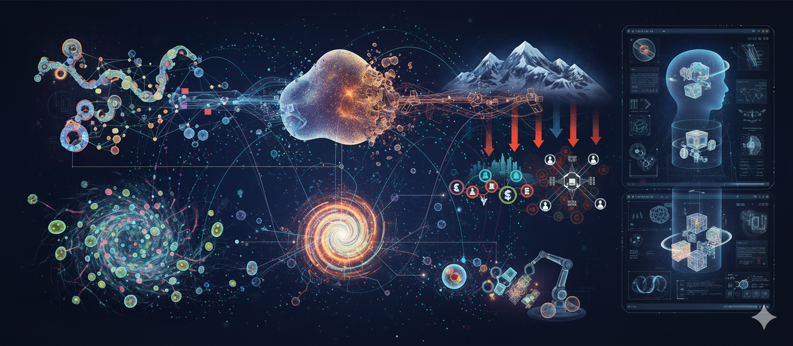
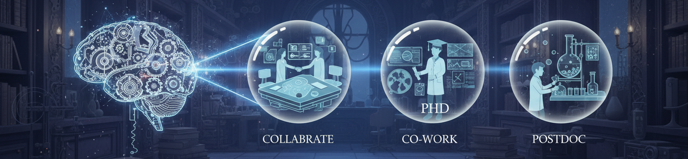

Hello World !
We are a group of creative researchers exploring physics at the interface of artificial intelligence, working in a deeply collaborative and interdisciplinary setting. Our goal is to understand complex systems and to see how modern computational approaches, especially deep learning, can contribute to solutions for societal good. Our main research interests include:
- Collective Intelligence in Natural and Artificial Systems: How do large groups of individual agents—be they birds in a flock, cells in a tissue, or robots in a swarm—coordinate to achieve complex, group-level goals? We explore the physical principles behind this emergent intelligence, studying how local rules and interactions give rise to sophisticated collective behaviors in both living and engineered systems.
- Physics of Living Matter: We view biological tissues as a form of active matter. We study the collective migration and self-organization of cells to better understand fundamental processes like wound healing, tissue development, and morphogenesis. By creating computational models that capture the interplay between cellular forces and signaling, we hope to contribute insights that could one day aid in regenerative medicine.
- Mechanics of Disordered Materials: Materials like glasses and granular packings lack a perfect crystal structure, which makes predicting their behavior, particularly failure, a difficult challenge. We investigate the fundamental mechanics of these systems, applying machine learning techniques to identify subtle structural precursors to failure. Our goal is to contribute to a more predictive science of materials, which is essential for designing more resilient and safer structures.
- AI as a Tool for Scientific Discovery: A common thread through all our research is the use of deep learning not just for prediction, but as a tool for gaining fundamental insight. We are committed to developing simple models by machine intelligence (MI). We aim to uncover the underlying physical principles our models have learned, helping us to formulate new hypotheses and deepen our understanding of the complex natural systems we study.
We thrive on a close partnership with experimentalists and other theorists, creating a dynamic environment for learning and discovery.
🌟 Highlights
- Research Interests: Investigating the dynamics of natural and artificial complex systems, with a focus on out-of-equilibrium soft, glassy, and active matter.
- Physics at the Interface of AI: By training models from physical systems, we integrate fundamental physical laws into novel AI models. This involves using high-performance computing and explainable AI to decode molecular information processing, predict material failure, and attempts to understand emergent behaviors in living and artificial systems.
- Teaching and Mentoring: Engaged in teaching courses such as Mathematics for AI and Intelligent Systems, and mentoring research interns and graduate students.
🌟 Join Us
Join Us to Innovate
We are seeking creative individuals to join our lab to co-create the future.
Whether you are an established researcher, a budding scientist, or a creative force eager to collaborate, we have a place for you. We are actively seeking passionate individuals for:
Find your chance to work on projects that matter, surrounded by a team to pushing the boundaries of what's possible. We believe in the power of diversity and the magic that happens when generative minds connect.
Ready to answer the call?
We want to hear from you: your vision and plans with us.
Email your one-page CV, a well supported SOP
